GLPI
Installation et configuration d'un serveur GLPI sur Debian, dans le même lab que le projet AD/DHCP.
Le serveur GLPI est hébergé en 192.168.100.20,
avec Apache, MariaDB et PHP. Le plugin GLPI Inventory est installé pour centraliser
l'inventaire automatique des postes du domaine, dont le client Windows 10 déployé via GPO.
Serveur GLPI
Debian · Apache · MariaDB
Interface web sur port 80
Teclib' · AGPLv3+
Déployé via GPO sur lab_rad_win10
Mise en place du serveur
Installation complète de la stack Apache + MariaDB + PHP, puis déploiement de GLPI via l'archive officielle. Les commandes suivantes sont exécutées en root ou avec sudo.
# Mise à jour du système apt update && apt upgrade -y # Installation Apache, MariaDB, PHP et extensions requises par GLPI apt install -y apache2 mariadb-server \ php php-mysql php-curl php-gd php-intl php-ldap \ php-apcu php-xmlrpc php-xml php-mbstring php-cas \ php-zip php-bz2 php-imap php-opcache
# Sécurisation de MariaDB mysql_secure_installation # Connexion et création de la base GLPI mysql -u root -p -- Dans le shell MySQL : CREATE DATABASE glpi CHARACTER SET utf8mb4 COLLATE utf8mb4_unicode_ci; CREATE USER 'glpi'@'localhost' IDENTIFIED BY 'MotDePasseGLPI'; GRANT ALL PRIVILEGES ON glpi.* TO 'glpi'@'localhost'; FLUSH PRIVILEGES; EXIT;
# Télécharger l'archive GLPI depuis GitHub wget https://github.com/glpi-project/glpi/releases/download/10.0.17/glpi-10.0.17.tgz # Extraire dans le répertoire web tar -xzf glpi-10.0.17.tgz -C /var/www/html/ # Droits Apache chown -R www-data:www-data /var/www/html/glpi chmod -R 755 /var/www/html/glpi
# Créer le VirtualHost nano /etc/apache2/sites-available/glpi.conf
# Contenu du VirtualHost : <VirtualHost *:80> ServerName 192.168.100.20 DocumentRoot /var/www/html/glpi/public <Directory /var/www/html/glpi/public> AllowOverride All RewriteEngine On </Directory> </VirtualHost>
# Activer le site et les modules Apache a2ensite glpi.conf a2enmod rewrite systemctl restart apache2
# L'installation se termine dans le navigateur : # → http://192.168.100.20/glpi # Renseigner : hôte DB = localhost, utilisateur = glpi, base = glpi # Supprimer le dossier install après configuration (bonne pratique) rm -rf /var/www/html/glpi/install
Connexion et tableau de bord
GLPI est accessible via navigateur sur
http://192.168.100.20/glpi.
Connexion avec le compte Super-Admin via la base interne GLPI.
Le tableau de bord centralise les équipements du parc, les tickets et les statistiques.
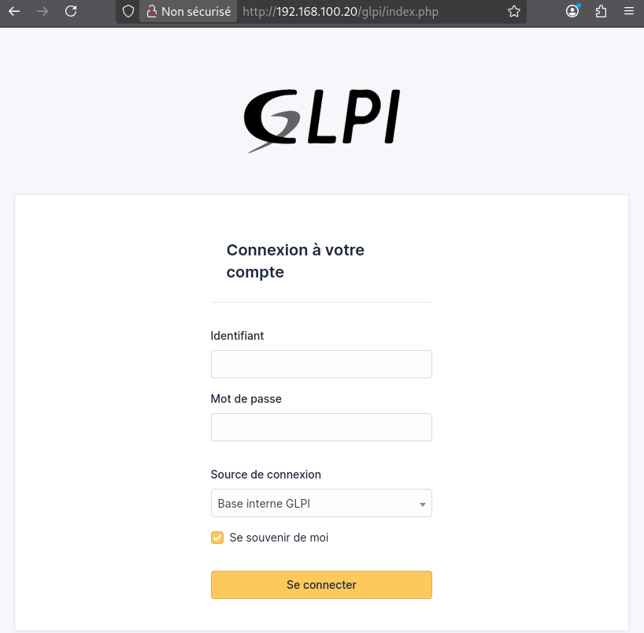
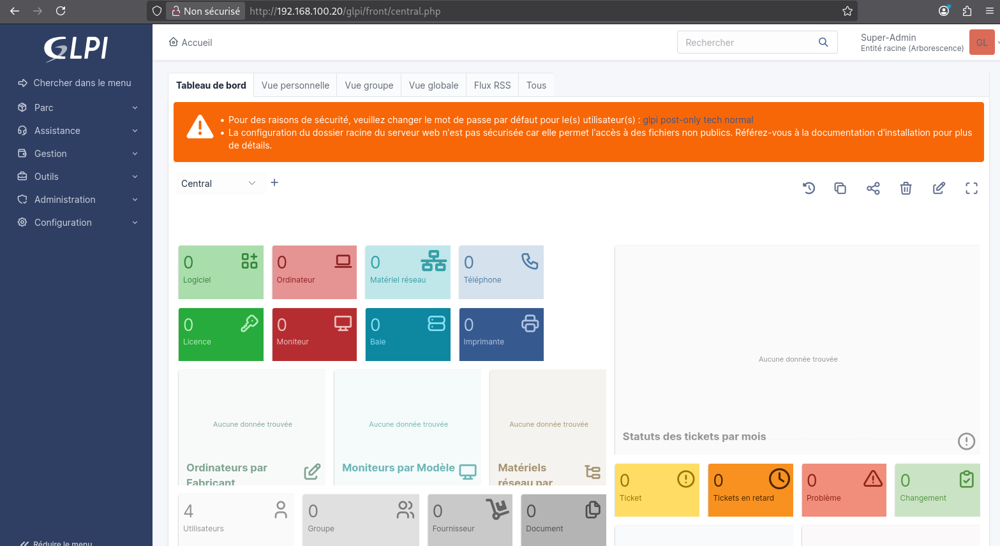
Installation du plugin d'inventaire
Le plugin GLPI Inventory (Teclib') est récupéré depuis le catalogue officiel ou GitHub, puis activé dans GLPI. Il expose une API que l'agent installé sur les clients utilise pour remonter l'inventaire matériel et logiciel.
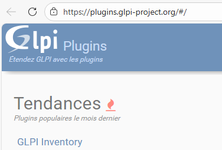
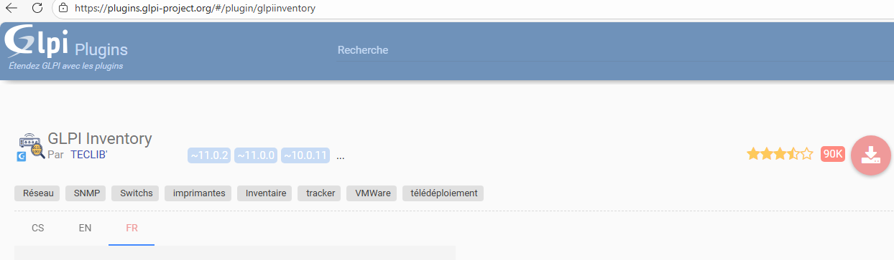
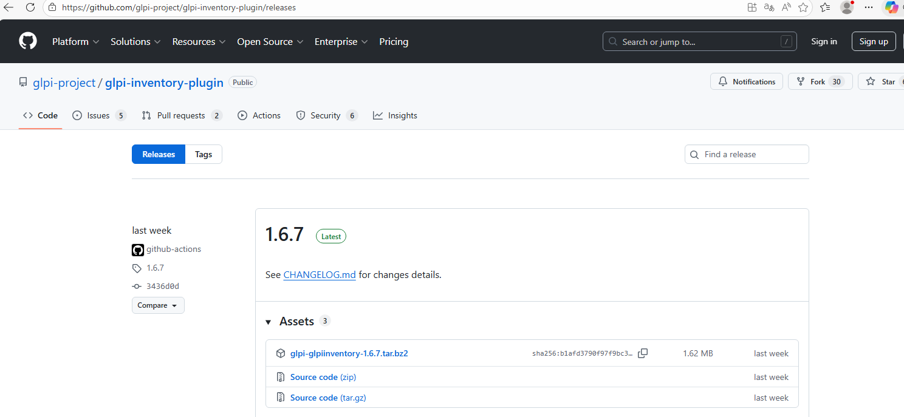
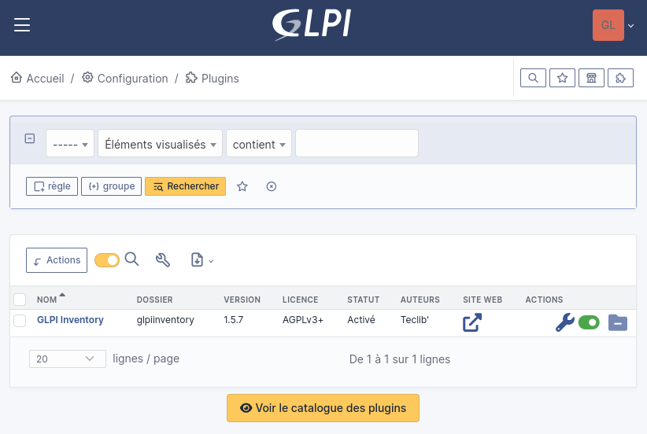
Plugins — GLPI Inventory 1.5.7 activé">Paramétrage de GLPI Inventory
La configuration générale du plugin définit le port d'écoute de l'agent
(62354), la rétention des logs
(20 jours) et les modules actifs. L'inventaire des ordinateurs est activé par défaut ;
l'inventaire distant des hôtes VMware est désactivé dans ce lab.
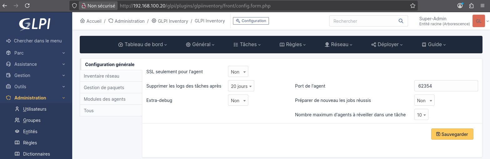
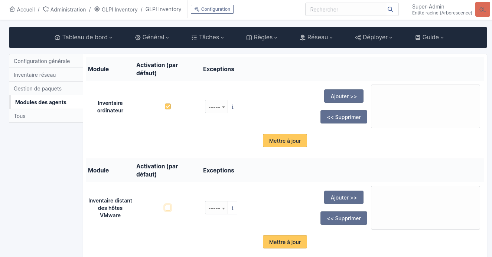
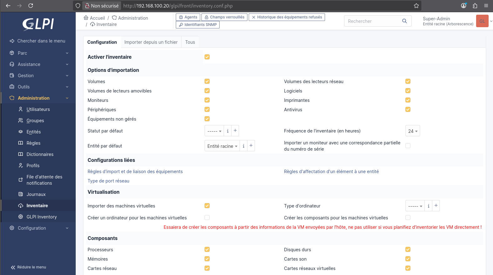
Inventaire — options d'importation, composants, virtualisation, fréquence 24h">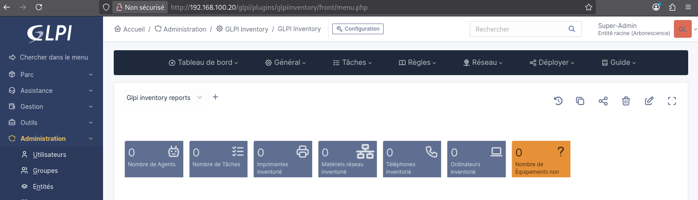
Inventaire du poste Windows 10
L'agent GLPI 1.16, déployé via GPO sur lab_rad_win10, remonte automatiquement l'inventaire vers le serveur. Le poste apparaît dans Parc > Ordinateurs avec ses caractéristiques complètes : fabricant VMware, OS Windows 10 Professionnel, processeur AMD Ryzen AI 9 365w.
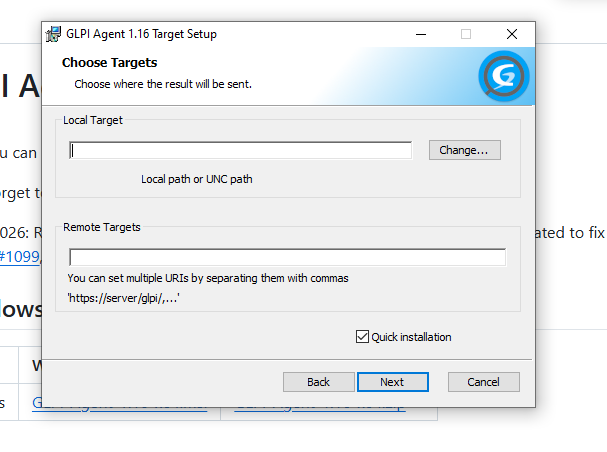
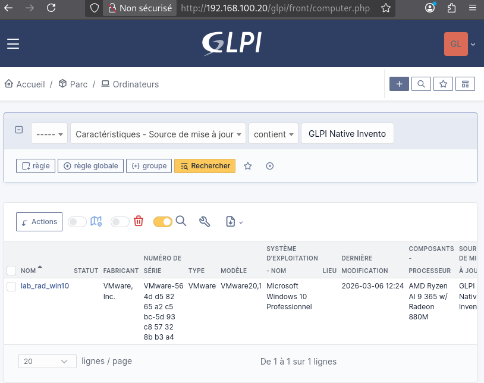
Ordinateurs — lab_rad_win10 inventorié via GLPI Native Inventory">